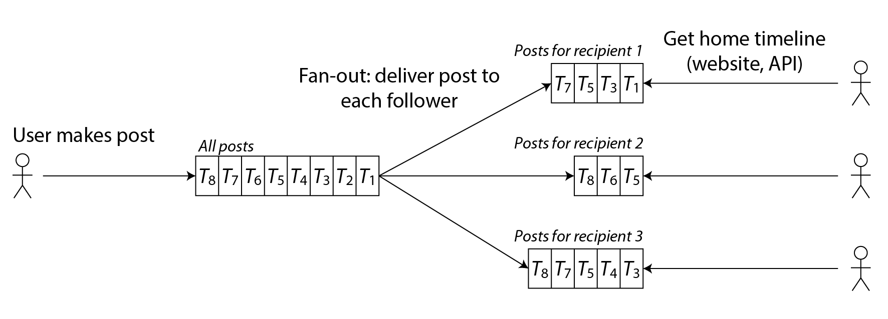
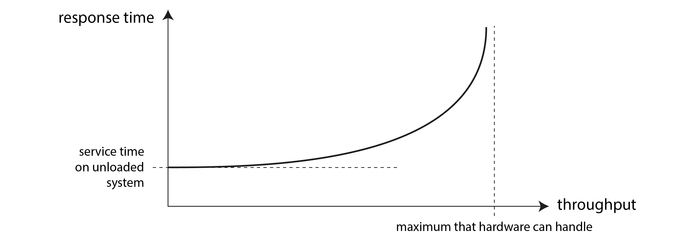
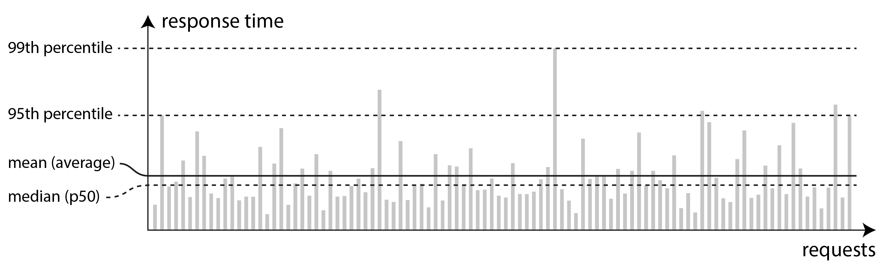
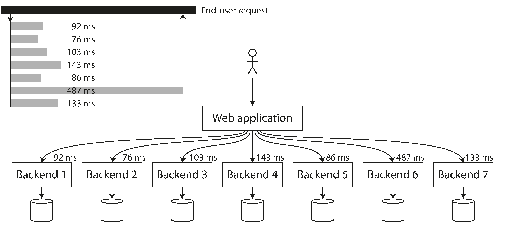

术语表 · 第 2 章 · 课程 2 / 14
定义非功能性需求
「快」「稳」「能扩」这三个词在评审文档里等于没说。这一章干的事，是把它们换成四个可以用数字争论的量：分位数、故障模型、伸缩系数、可运维性。不换，你就只能在事故复盘会上第一次听说自己系统的真实指标。
2.1功能需求与非功能需求，成本结构不同
需求清单最前面通常是功能：要哪些页面、每个按钮做什么。这些是功能需求（functional requirements）。剩下的是非功能需求（nonfunctional requirements）：快、可靠、安全、合规、易维护。
原文点出的关键差别是：这些要求未必会明确写下来，因为它们看似理所当然。而这正是它们在评审里最危险的地方：没写下来的东西无法验收，也就无法在「这个功能能不能下周上线」的讨论里占一个席位。一个慢得让人无法忍受、或很不可靠的应用，几乎等于不存在；但它在需求文档里占的篇幅是零。
本章覆盖四项：性能（怎么定义和测量）、可靠性（出问题时还能不能正确工作）、可伸缩性（负载涨了能不能高效加算力）、可维护性（长期是否容易改）。四项有个共同结构：每一项都必须先有一个「当前值」，才谈得上「要求」。这就是SLO（服务级别目标，service-level objective）的意思：把「快」写成一条能验收的内部目标——哪个指标、哪个分位数、阈值多少、在多长的窗口里统计。没有这个基线，SLO 只是一句许愿。
2.2先有一个具体的负载，否则谈不了性能
原文用一个社交网络时间线的案例把抽象概念落地，这个案例值得完整走一遍，因为它同时演示了物化、扇出、和「平均值骗人」三件事。
假设：每天 5 亿条帖子，平均每秒 5,700 条，尖峰可达每秒 150,000 条；每位用户平均关注 200 人、也有 200 名关注者（分布极偏：多数人只有几个关注者，少数名人超过一亿）。
读路径是首页时间线：取出你关注的人最近的帖子，按时间倒序取 1000 条。用一条 SQL 就是 posts JOIN follows JOIN users WHERE follows.follower_id = current_user ORDER BY timestamp DESC LIMIT 1000。
朴素做法是客户端每 5 秒轮询一次（polling）。一千万在线用户 → 每秒 200 万次查询；而每次查询要为 200 个被关注者各取一次近期帖子再合并 → 每秒 4 亿次「按发帖者查近期帖子」。这个数字已经不是优化能解决的了，是方案错了。

换个方向：发帖时主动推给在线关注者，并预先算好每个人的时间线存起来。这就是物化（materialization），存下来的结果是物化视图（materialized view）。代价换算很干脆：每秒 5,700 条帖子 × 扇出 200 ≈ 每秒 100 万次时间线写入。从 4 亿降到 100 万，同一个问题的两个方向差了 400 倍。
「物化」这个译名不好懂。取义是「让它变成实体」：查询结果本来只是 SQL 里的一段描述，物化之后变成一张实际存在、能直接读的表。这个词在中文资料里还有两个说法，见到别当成不同的东西——「实体化视图」是按字面直译，「预计算视图」是按作用意译。写 README 或评审文档时，第一次提到 MATERIALIZED VIEW 把中文和英文并列一次，后面就固定用「物化视图」。
但物化不是免费的午餐，它把成本挪到了两个极端情况上，而这两个极端恰好是原文点名要处理的：
关注太多的人
有人关注了几万个账户且这些账户发帖频繁，写他的时间线速率会极高。原文的解法很干脆：这位用户多半也读不完，可以丢弃一部分写入，只展示一个样本。这是一个产品决策伪装成技术决策，你必须有权决定「少给几条」。
被太多人关注的人
名人发一条帖要插进几百万条时间线，而且丢弃不可接受。解法是把名人帖子单独存，读时再与物化时间线合并。这已经不是纯物化，而是「物化 + 读时归并」的混合体，而混合的触发条件是幂律分布，不是平均值。
这个案例的通用教训：扇出系数是一个乘数，而乘数的分布比它的均值重要。按「平均 200 个关注者」做容量规划，遇到一个一亿关注者的账号就是 50 万倍的偏差。评审里该问的是「这个乘数的 p99 是多少、最大值是多少、最大值那个对象是谁」。
2.3响应时间与吞吐量：两种指标，两种用途
原文把两个指标分得很清楚：
- 响应时间（response time）：从用户发出请求到收到响应所经过的时间。单位是秒/毫秒/微秒。
- 吞吐量（throughput）：系统每秒处理的请求数或数据量。给定硬件下存在上限，即最大吞吐量。
用途不同：用户关心响应时间；吞吐量决定你需要多少台机器，从而决定成本。而「可伸缩性」这个词的定义就挂在这条链上：如果增加计算资源能显著提高最大吞吐量，系统就有可伸缩性。

负载低时响应时间约等于服务时间；随着负载上升，排队开始贡献延迟；接近上限时曲线几乎垂直。这意味着「留 20% 余量」和「留 5% 余量」在纸面上只差一点，在 p99 上可能差一个数量级。也意味着容量规划不能按平均负载算，你要按峰值算，而且峰值期间的一次慢查询会被排队放大成一片慢请求。
原文还区分了四个常被混用的词，这个区分在排障时非常实用：
| 术语 | 含义 | 排障时怎么用 |
|---|---|---|
| 响应时间 response time | 客户端看到的总耗时，含系统任何一处产生的延迟（delays incurred anywhere in the system） | 唯一对用户有意义的量；必须在客户端测 |
| 服务时间 service time | 服务真正用于处理该请求的时间 | 服务端自测的耗时，通常是响应时间的子集 |
| 排队延迟 queueing delay | 等待 CPU、等待出站网络缓冲区等 | 服务端指标里常常「看不见」，是差额的来源 |
| 延迟 latency | 请求已经在路上、但没在处理的时间，也就是它在干等 | 网络延迟是其中一部分 |
表格最后一行值得单说。原文形容延迟时说请求是 latent 的，中文译本译成「潜伏」，读起来像「藏起来」，其实是「还没轮到它被处理」：请求已经从客户端出发，这段时间它只是在路上、在队列里、在缓冲区里干等，没有任何 CPU 在算它。这个区分在排障时是分水岭——「在算」慢是代码问题，「在等」慢是资源争用与排队问题，两者的改法完全不同。
原文在这里给了一个纯底层读者会立刻共鸣的清单：即使反复发送同一个请求，每次响应时间也可能相差很大，因为上下文切换到后台进程、网络丢包与 TCP 重传、垃圾回收暂停、缺页迫使系统从磁盘读取数据、服务器机架的机械振动，都会带来随机额外延迟。
「缺页」那一条牵出一个常见误判：一个服务「什么都没干」却偶发 5 ms 抖动，很可能不是代码慢，是它碰到了一个不在页缓存里的页。这也是为什么第 4 章会强调「内存数据库的优势并不来自省去磁盘读」：如果内存够，操作系统本来就把热块缓存在内存里；真正的差别在别处。
还有一条必须在评审里点出来的机制：队头阻塞（head-of-line blocking）。服务器同时能处理的任务数有限（比如受核数限制），因此只需少数几个慢请求，就足以阻碍后续请求。后续请求本身很快，但客户端看到的总响应时间很长，因为它们要等前面那些。这里的关键句是：排队延迟不属于服务时间，所以在客户端测量响应时间十分重要。服务端自己的 p99 可以是 30 ms，用户在客户端看到的 p99 是 900 ms，两边都没说谎。
2.4平均值会说谎，分位数不会
原文这一段是整个性能章节的核心，我把它整段摘下来，因为每个字都有用：
服务通常会报告 平均（mean）响应时间，也就是 算术平均值（arithmetic mean）：把所有响应时间相加，再除以请求数。平均响应时间有助于估算吞吐量的上限。不过，如果你想知道「典型」的响应时间，平均值就不是很好的指标，因为它没有告诉你究竟有多少用户实际经历了这样的等待。
「没有告诉你究竟有多少用户经历了这样的等待」——这句话是平均值问题的全部。平均值 250 ms 的系统，可能是「所有人都是 250 ms」，也可能是「95% 是 100 ms，5% 是 3 秒」。这两种系统的用户体验完全不同，运维动作完全不同，而在平均值上是同一个数。

替代方案是分位数（percentile）：把响应时间从快到慢排序，中位数（p50）是正中间那个值。p95、p99、p999 分别是「95%、99%、99.9% 的请求快于这个阈值」。p95 = 1.5 s 意味着每 100 个请求有 95 个在 1.5 s 内完成，另外 5 个要 1.5 s 或更久。
为什么高分位数值得花钱？原文给的例子是亚马逊：它用 p99.9 描述内部服务的响应时间要求，尽管只影响每 1000 个请求中的一个。理由是，响应最慢的客户往往是在账户里积累了最多数据的人，也就是最有价值的客户。这句话在评审里的分量比任何性能数字都大：长尾不是随机分布的，它系统性地落在用得最深的用户身上。
但同一段也给了边界：亚马逊认为针对 p99.99 优化成本过高、收益不足，因为极高分位数很容易受不可控随机事件影响，越往后收益越小。所以正确的表述不是「我们要追求低延迟」，而是「我们的 SLO 是 p99 < X，p999 只做监控不做承诺」。
尾部延迟放大：一个慢调用拖垮整个请求

原文这一段是本章最应该被背下来的机制：
如果后端服务要为一次最终用户请求执行多次调用，那么高分位数尤其重要。即使这些调用并行发出，最终用户请求仍要等待其中最慢的一次完成。只需一个慢调用，就足以拖慢整个最终用户请求。即使后端调用中只有很小一部分速度较慢，一次最终用户请求所需的后端调用越多，其中出现慢调用的概率也就越大，最终会有更高比例的用户请求变慢。这种效应称为 尾部延迟放大（tail latency amplification）。
把这段算成数字，你就再也不会忽略它。假设单次调用的 p99 = 1 s（即 1% 的调用慢），一次用户请求并行调用 n 个后端，那么「全部都快」的概率是 0.99n：
| 后端调用数 n | 至少一次慢调用的概率 | 含义 |
|---|---|---|
| 1 | 1% | p99 就是 p99 |
| 10 | ≈ 9.6% | 已经比你承诺的 p99 差了一个数量级 |
| 50 | ≈ 39.5% | 四成用户请求变慢 |
| 100 | ≈ 63.4% | 典型用户就是慢用户 |
这就是为什么微服务化会让「每个服务 p99 都达标」的系统整体不达标。每个团队都能拿出自己那张 p99 = 1 s 的图，而用户感受到的是 39%。分位数不可跨服务相加，也不可跨调用相乘后还当分位数用——它只在单个请求维度上有意义。
原文还补了一条实操上的坑：计算分位数时，对分位数取平均值——例如为了降低时间分辨率，或合并多台机器的数据——在数学上没有意义。聚合响应时间数据的正确方法是把直方图相加。这条在监控系统里天天出错：把 10 台机器的 p99 取平均，得到的数字既不是整体的 p99，也不是任何一台的 p99。开源库（HdrHistogram、t-digest、DDSketch 等）解决的问题就是「用极低开销维护可合并的直方图」。
最后是那个在评审里最容易被混着用的三件套。它们是层层收窄的关系，不是三个同义词：
| 缩写 | 全称 | 它是什么 | 能不能追责 |
|---|---|---|---|
| SLI | service-level indicator，服务级别指标 | 被观测的那个数本身：滚动 28 天的 p99 响应时间、错误率、可用分钟数 | 不能，它只是测量 |
| SLO | service-level objective，服务级别目标 | 给这个数设的阈值，例如「28 天内 p99 < 1 s，且 99.9% 的请求成功」 | 能追内部责任，但不能拿来赔钱 |
| SLA | service-level agreement，服务级别协议 | 写进合同的 SLO，外加「没达到会怎样」：退款、抵扣、客户可无罚退出 | 能，是法律与商业后果 |
所以三者的顺序是 SLI → SLO → SLA：先有一个测得出、说得清的数，再给它定一条内部红线，最后才谈要不要把红线写进合同、违约怎么赔。搞反了就出两种典型事故：把 SLA 的数字当内部指标追，团队会为了保赔偿而隐瞒故障；把 SLO 当合同对外宣传，客户按字面索赔时你没有免责条款。
一条合格的 SLO 必须同时给全四个要素，缺一个就可以被追问到底：哪个指标（p99 还是错误率）、阈值多少（1 s）、多长的统计窗口（滚动 28 天还是自然月）、在哪儿测（客户端、网关、还是服务端自报）。四者任一含糊，「达标」就变成各说各话。原文也诚实地承认：在实践中为 SLO/SLA 定义良好的可用性指标并不简单。
至于 SLA 的条款长什么样，常见的写法是「月度可用性低于 99.9% 时，按不足部分返还当月费用的 10%，低于 99% 时返还 50%」。注意这种条款的两个隐含事实：SLA 一定比 SLO 松（留出缓冲，否则天天赔钱），赔偿上限通常远低于真实损失（客户业务停摆一天，退的那点费用根本不覆盖）。所以 SLA 是兜底，不是可靠性的目标函数。
2.5可靠性：故障不是失效
原文给的定义很短，但它把「可靠」从一个形容词变成了一个可检验的命题：
如果把这些合在一起称为「正确工作」，那么 可靠性（reliability）可以粗略理解为「即使出了问题，也能继续正确工作」。为了更准确地描述所谓「出了问题」，我们要区分 故障（fault）和 失效（failure）。
定义本身在原文里是列表形式，值得按原文的结构记住：
- 故障（fault）：系统的某个部分停止正常工作。单块硬盘坏了、单台机器崩了、依赖的外部服务中断了。
- 失效（failure）：整个系统停止向用户提供所需的服务，也就是没有达到 SLO。
原文紧接着的解释是这一段最有价值的洞见，故障与失效之所以容易混淆，是因为二者其实是同一件事，只是观察的层次不同。一块硬盘停止工作，如果系统只有这一块盘，系统就失效了；如果系统有许多块盘、数据在别处有副本，那它只是一项故障，系统容忍了它。
这个区分一旦建立，「高可用」这个词就必须被追问：你在哪个层次上观察？你容忍哪些故障？容忍几个？原文说得很不客气：容错能力总是针对特定类型、特定数量的故障而言的。一个系统也许最多能容忍两块硬盘同时失效，或三个节点中有一个崩溃。要求容忍任意数量的故障没有意义：如果所有节点都崩溃了，任何办法都无济于事。（原文在此处还开了个玩笑：如果整个地球连同上面的服务器都被黑洞吞噬，要容忍这项故障就得把网站托管到太空中。）
原文还引入了一个必须记住的缩写：无法容忍某个部分出故障，这个部分就叫单点故障（SPOF, single point of failure），因为它一旦故障就会升级为整个系统的失效。评审里最有用的句式是：「这个组件是 SPOF 吗？如果是，它故障时系统降级到什么程度，而不是『会挂』。」
硬件故障是常态，软件故障是相关事件
原文给的硬件数字很具体，直接可以用在容量规划里：机械硬盘每年约 2%～5% 故障率（一万块盘的集群平均每天坏一块）；SSD 每年约 0.5%～1%，但每块盘大约每年仍会遇到一次无法纠正的错误，即使盘很新，这个错误率高于机械硬盘；大约每 1000 台机器有一台的某个 CPU 核心偶尔会算错（多半是制造缺陷），有时崩溃、有时只是返回错结果；即使有 ECC，一年内仍有超过 1% 的机器会遇到无法纠正的内存错误。
这些数字的意义在于它们推出一个结论：在大规模系统里，硬件故障发生得足够频繁，已经成了系统正常运行的一部分。所以容错设计的目标不是消灭故障，是让故障不升级为失效。
然后是本章我最希望你在评审里引用的一段：
尽管硬件失效之间可能存在较弱的相关性，但大体上仍然相互独立。例如，一块硬盘失效以后，同一台机器上的其他硬盘很可能还能继续正常工作一段时间。相比之下，软件故障往往高度相关，因为许多节点通常运行同一套软件，也就带有同样的缺陷。这类故障更难预见，而且往往会比互不相关的硬件故障造成多得多的系统失效。
「高度相关」这四个字，是分布式系统设计里最贵的四个字。硬件故障按独立事件算，加冗余就能把概率压到可接受；软件故障是同一个 bug 在所有副本上同时触发，加副本不降低概率，反而让爆炸半径乘以副本数。原文给的例子也很有说服力：2012 年 6 月 30 日的闰秒触发 Linux 内核缺陷，使许多 Java 应用同时挂起；某些型号的 SSD 因固件缺陷在恰好运行 32,768 小时（不到 4 年）后集体失效，数据无法恢复。
「32,768 小时」这个数字值得记住，因为 32768 = 215——一个 16 位计数器回绕。这是一个时间炸弹型的软件故障：不是随机坏，是到了某个整数值才坏，而且所有同型号设备同时到点。这解释了为什么「滚动升级 + 灰度」不能解决所有问题：它假设故障是随机的、可以靠分批稀释，而这个故障是确定性的、所有节点同时引爆。
原文列的五类软件故障模式可以当成检查清单用：
- 某个缺陷在特定情况下让所有节点同时失效（闰秒、固件计数器回绕）。
- 某个失控进程耗尽共享而有限的资源（CPU、内存、磁盘、带宽、线程）。
- 依赖的服务变慢、失去响应，或开始返回内容损坏的响应。
- 不同系统交互产生涌现行为，每个系统单独测试都不会出现。
- 级联失效：一个组件出问题导致另一个过载并变慢，后者又拖垮下一个。
最后一条是下一节反例的核心机制。而原文对它的处方也很具体：认真思考系统中的假设和交互、彻底测试、隔离进程、允许进程崩溃并重启、避免重试风暴之类的反馈环路、并在生产环境度量与监控。
人也是系统的一部分
原文在这里给了一个统计：一项针对大型互联网服务的研究发现，运维人员修改配置是服务中断的首要原因，而硬件故障（服务器或网络）只在 10%～25% 的中断中起了作用。
更值得注意的是原文对「人为错误」这个说法的处理：把错误归咎于个人往往适得其反；所谓「人为错误」其实不是事故的根本原因，而是人与技术共同构成的社会技术系统（sociotechnical system）出了问题的一种症状。这句话的技术后果是具体的：如果一个配置变更能一键打挂整个集群，那问题在变更机制，不在那个人。可落地的对策原文也列了：彻底测试（含属性测试）、提供回滚机制、逐步发布、详细监控与可观测性、精心设计界面让「做正确的事」更容易。
2.6反例：一次重试风暴把 40% 的余量吃干
这个反例的形状在原文的侧栏里被点名过，叫亚稳态故障（metastable failure）：系统濒临过载时陷入恶性循环，效率越来越低因而更过载；即使负载随后下降，系统也可能一直停留在过载状态，直到重启或其它方式重置。
反例：客户端重试 + 无抖动退避 + 无超时预算
一个 API 网关后面挂 6 个下游服务，每个都配了「失败重试 3 次」。客户端用固定 100 ms 间隔重试。网关到下游的超时是 2 s。容量规划按峰值 QPS 的 1.4 倍（40% 余量）配机器。
某天一个下游服务的数据库主从切换，p99 从 80 ms 涨到 3 s。只是变慢，没有报错。
① 变慢被翻译成了流量放大。请求 2 s 超时 → 客户端重试 3 次 → 同一个逻辑请求在下游变成 4 次物理请求。有效负载乘 4，40% 的余量瞬间不存在。
② 固定间隔重试是同步风暴。所有客户端在同一时刻重试，下游看到的是尖峰而不是平滑流量；排队立刻把 p99 推得更高，触发更多超时，正反馈闭环成立。
③ 重试跨了多层，乘数相乘。网关重试 3 次，下游服务内部再重试 3 次，最底层看到的可能是 9～12 倍的请求。没人做过这个乘法。
④ 最坏的：它不会自愈。负载回落后，积压仍在，排队仍在，超时仍在，重试仍在。这就是亚稳态：系统停在一个坏平衡点上，重启才出来。重启期间所有请求失败，而重启后被同一批积压请求再次打挂。
改法（按优先级）：指数退避加随机抖动（exponential backoff + jitter），让重试不成群；熔断器（circuit breaker）在连续失败后直接拒绝，把压力还给调用方；令牌桶限流，把入口速率钉在系统能处理的水平；服务端在察觉接近过载时主动拒绝（load shedding）并回背压（backpressure）让客户端降速；以及最容易被忽略的一条，端到端重试预算：整条调用链只允许重试一次，且重试预算随调用深度递减，而不是每层各自重试 3 次。
这个反例的教训可以压成一句：重试不是可靠性措施，是一个隐式的容量放大器。它的倍数等于「每层重试次数」的乘积，而这个乘积从来没人算过，也没人写进容量规划。所以评审里看到「失败重试 3 次」时，正确的问题是：「这个 3 乘上下面两层的 3，最底层看到的是 27 倍还是 3 倍？超时预算怎么分配？退避有没有抖动？」
练习判断这是故障还是失效
四段描述。判断每一段描述的是「故障」还是「失效」，注意有时答案取决于你站在哪一层看。
一个三副本的存储集群，一块磁盘报 SMART 错误被自动摘除，数据从另外两个副本重建，用户无感知。
在集群这一层看，这是故障（部分不工作）；它没有升级为失效，因为系统容忍了它。如果重建期间又坏一块导致数据不可用，那一刻才升级为失效。这就是「同一件事、不同观察层次」。
一个服务所有实例在同一秒崩溃，因为它们都读到了一个格式非法的配置项，启动时 panic。
这是「许多节点运行同一套软件、带同样缺陷」的教科书案例。加副本不降低概率——副本越多，同时崩的越多。修法在配置校验和灰度发布，不在加机器。
监控显示服务端 p99 = 45 ms，全部 SLO 达标；用户投诉页面很卡，客服收到的工单翻了五倍。
服务端测的是服务时间，用户感受的是响应时间——差额是排队延迟、网络往返、客户端渲染、以及一次请求里最慢的那个后端调用。原文的原话：排队延迟不属于服务时间，所以在客户端测量响应时间十分重要。
一个团队给核心接口定了 SLO「p99 < 100 ms」，为此把 100 个后端调用全部改成并行，认为「并行之后总耗时就是最慢那个」。
取最大值恰恰是问题：单调用 p99 = 1 s 时，100 个并行调用「全部都快」的概率只有 0.99¹⁰⁰ ≈ 36.6%。并行减少的是平均值，放大的是尾部。要压尾部，得减少调用数、给慢调用设单独预算、或者接受降级返回。
练习单选：哪个指标能用
单选你需要向老板说明「我们的接口够快」。下面四个数字，哪一个最不能支撑这个结论？
练习把你的 SLO 写成可验收的一句话
你手上有一个接口，现在只有一句「要求响应快」。请把它改写成一条可验收的 SLO，并补上三件事：在哪儿测、超了怎么办、以及它和哪个业务后果挂钩。
提示：一条合格的 SLO 至少包含「哪个分位数」「阈值」「统计窗口」「测点位置」四个要素，缺一个就可以被追问。
一个能过评审的版本：
「首页时间线接口：客户端测得的 p99 响应时间 < 800 ms，p50 < 200 ms，按 28 天滚动窗口统计，只统计 HTTP 2xx 且非客户端取消的请求。超阈值时的动作：先看是排队（服务端 p99 也涨）还是尾部放大（服务端 p99 正常），前者扩容量或限流，后者砍后端调用数或给慢依赖单独降级。
业务后果挂钩：p99 超过 1.5 s 时，我们的埋点显示次日留存下降约 3 个百分点，所以 800 ms 是留了一半余量的预警线，不是崩溃线。」
四个要素逐一对照：分位数（p99 与 p50 各一条，因为典型体验和长尾体验是两件事）、阈值（800 ms / 200 ms）、统计窗口（28 天滚动，短窗口会被单次发布污染）、测点位置（客户端，因为排队延迟不在服务时间里）。
再加两条容易被漏掉的：排除规则要写死（4xx 算不算？客户端主动取消算不算？），否则每次争议都在重算口径；阈值要能被推翻——写成「预警线」而不是「崩溃线」，因为 p99 一旦设成硬阈值，团队就会开始优化指标而不是优化体验。
一个诚实的补充：如果你的系统只有几十个用户，p999 样本量根本不够，那条指标会天天跳红。这时诚实的做法是只承诺 p95 加「无错误率」，而不是硬凑一个 p999。
→面试里怎么答
被问「你怎么保证这个系统的性能和可靠性」时，不要答技术栈，答四个数字和一个模型：
「性能我分两个口径：用户侧的 p99 响应时间，和服务端的最大吞吐量。响应时间在客户端测，因为排队延迟不在服务时间里；服务端 p99 45 ms 而用户觉得卡，是常见情况，差额来自排队、网络和一次请求里最慢的那个后端调用。
我不会报平均值。平均值不告诉你多少人经历了慢，而且分位数不能跨机器取平均，只能把直方图相加。
可靠性我先写故障模型：要容忍的是单盘、单机、还是整个可用区？容错永远针对特定类型和数量的故障，不写清楚『高可用』就是形容词。另外我按软件故障而不是硬件故障来设计，因为软件故障高度相关，同一个 bug 在所有副本上同时触发，加副本不降概率。
最后是容量：我按峰值配，并按 1.4 倍留余量。这个余量不是拍脑袋的，它决定了重试策略的上限：每层失败重试 3 次，三层叠起来最底层看到 27 倍流量，会直接把余量吃干并进入亚稳态，所以重试必须有抖动、有熔断、有端到端预算。」
这四句的共同点是：每句都在定义一个可被检验的量，并且主动说出它的失效边界。面试官追问「如果 p99 达标但用户还是抱怨」，你已经有答案（测点位置 + 尾部放大）；追问「如果加机器没用」，你也有（亚稳态，加机器可能让情况更糟，要先卸压）。
→带走什么
这一章给的不是四个概念，是一个可以在评审会上当场执行的动作：把每一个形容词换成一个带分位数、带故障模型、带测量位置的句子。「快」换成「客户端 p99 < 800 ms，28 天窗口」；「稳」换成「容忍单可用区丢失，此时降级为只读，RTO 10 分钟」；「能扩」换成「负载翻倍时，加机器数与负载增长近似线性，翻盘点在单机写带宽」；「好维护」换成「新工程师能在一天内把服务在本地跑起来并有可观测性」。
无法被这样改写的需求，不是需求，是愿望。
贴进架构评审文档的话：「性能口径：客户端 p99 < 800 ms / p50 < 200 ms，28 天滚动窗口；不采用平均值与跨实例分位数平均。可靠性口径：容忍单机与单盘故障，不承诺可用区级；软件故障按相关性处理（同一版本同期部署 + 灰度）。容量：按峰值 1.4 倍余量，端到端重试预算 ≤ 1 次并带抖动与熔断，避免亚稳态。」
一手资源
第 2 章 定义非功能性需求（中文全译）：重点读「平均值、中位数与分位数」和「当过载系统无法恢复时」两个侧栏。前者教你换指标，后者是你下次事故的预演。
随时问我
把你系统现在报的那几个性能指标贴给我——尤其是平均值和「各实例 p99 平均」。我们一起看它掩盖了什么，然后改成一条能在事故复盘会上站得住的 SLO。